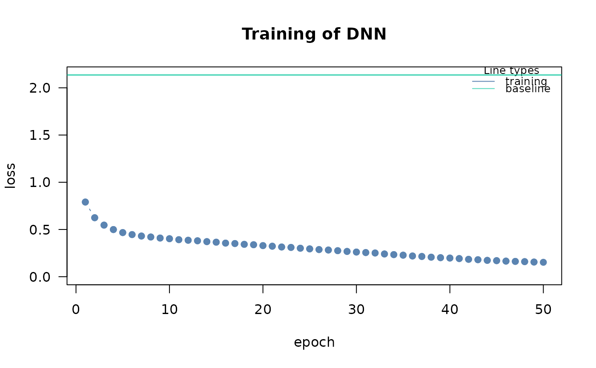
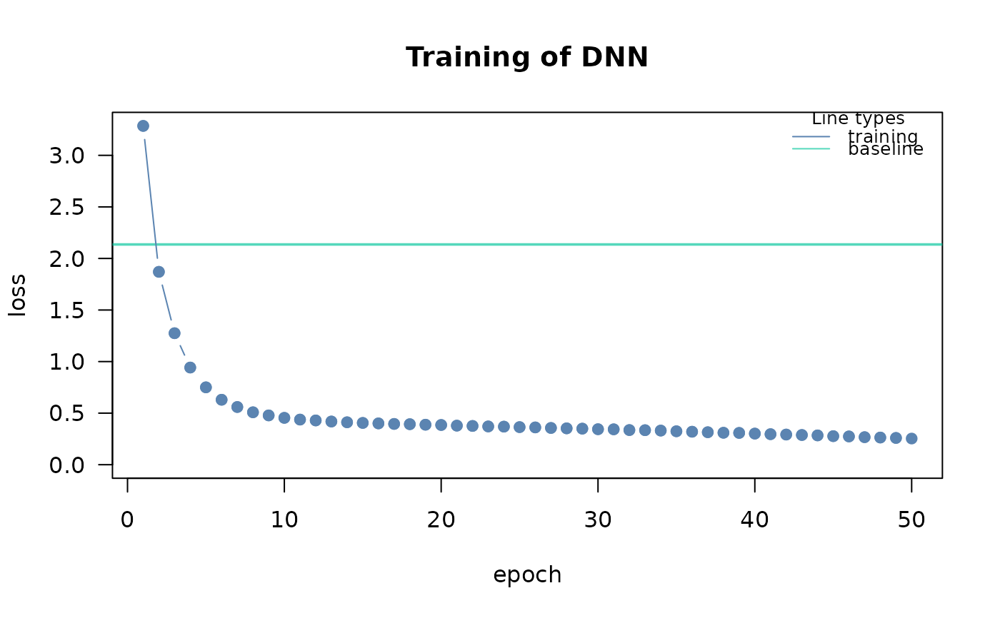

Adds predictors with linear effects to the DNN in the formula interface: dnn(Y ~ X1 + fe(Temp + I(Temp^2))).
Arguments
- lambda
regularization strength on the fixed effects (not tunable with
tune())- alpha
mix between L1 (
alpha = 0) and L2 (alpha = 1) regularization
Details
The first argument of fe(), not part of its signature, is the right-hand side of a formula, so
I(), interactions and factors work as in lm() (factors with treatment contrasts; 0 + or
- 1 inside fe() are ignored). Its terms enter the linear predictor (the link scale) as
\(\eta = f(X) + \beta^T x_{fe}\), without an intercept, which the output layer of the DNN \(f\) provides
(so do not combine fe() with bias = FALSE). The variables in fe() are not passed to the DNN,
and . in the formula expands to all other variables; a variable in fe() and in the DNN or in
e() is an error. Use one fe() term. Transformations that depend on the data, such as poly()
or scale(), are re-evaluated on newdata in predict(); compute them beforehand.
The global lambda and alpha of dnn() do not apply to the fixed effects; they are regularized only
by the lambda and alpha given to fe() (default: not at all), on the scale of the model matrix,
so center and scale the fixed-effect variables when regularizing them.
\(\beta\) is returned by coef() as fixed_effects, one row per model-matrix column and one column per
output of the network. It is estimated like a parametric term in a GAM, and is close to the GLM coefficient only if
the training converged and the fixed-effect variables are not functions of the DNN inputs. If they are correlated
with the DNN inputs, regularization of the DNN (lambda, dropout, early stopping) can bias \(\beta\). For
losses with a softmax ("cross-entropy", "multinomial", "clogit") only the differences
between the columns of fixed_effects are identified. coef() gives no standard errors; fit with
bootstrap = for their spread. In summary() and conditionalEffects(), the effect of a fixed
effect is the effect of its model-matrix column, e.g. separate rows for Temp and I(Temp^2).
fe() can be combined with e(), but is not supported in mmn() or with custom.
Examples
# \donttest{
if(torch::torch_is_installed()){
library(cito)
# linear effects of Temp and Temp^2, a non-linear effect of X1 learned by the DNN
set.seed(42)
n = 1000
dat = data.frame(X1 = runif(n, -2, 2), Temp = rnorm(n), Precp = rnorm(n))
dat$Y = sin(2 * dat$X1) + 1.0 * dat$Temp - 0.5 * dat$Temp^2 + rnorm(n, sd = 0.3)
m = dnn(Y ~ X1 + fe(Temp + I(Temp^2)), data = dat, loss = "mse", epochs = 50L, verbose = FALSE)
# the fixed effects, close to 1.0 and -0.5
coef(m)$fixed_effects
# "." uses every variable that is not in fe(); here X1 and Precp
m2 = dnn(Y ~ . + fe(Temp + I(Temp^2), lambda = 0.001), data = dat, loss = "mse", epochs = 50L, verbose = FALSE)
}


# }